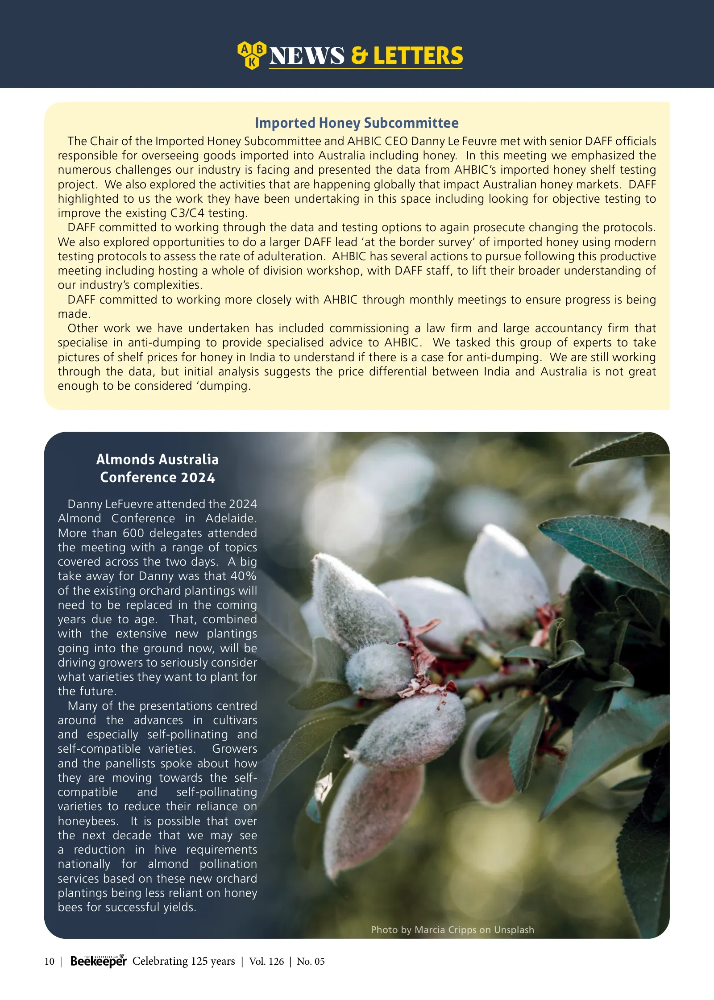

NEWS & LETTERS
Imported Honey Subcommittee
The Chair of the Imported Honey Subcommittee and AHBIC CEO Danny Le Feuvre met with senior DAFF officials
responsible for overseeing goods imported into Australia including honey. In this meeting we emphasized the
numerous challenges our industry is facing and presented the data from AHBIC’s imported honey shelf testing
project. We also explored the activities that are happening globally that impact Australian honey markets. DAFF
highlighted to us the work they have been undertaking in this space including looking for objective testing to
improve the existing C3/C4 testing.
DAFF committed to working through the data and testing options to again prosecute changing the protocols.
We also explored opportunities to do a larger DAFF lead ‘at the border survey’ of imported honey using modern
testing protocols to assess the rate of adulteration. AHBIC has several actions to pursue following this productive
meeting including hosting a whole of division workshop, with DAFF staff, to lift their broader understanding of
our industry’s complexities.
DAFF committed to working more closely with AHBIC through monthly meetings to ensure progress is being
made.
Other work we have undertaken has included commissioning a law firm and large accountancy firm that
specialise in anti-dumping to provide specialised advice to AHBIC. We tasked this group of experts to take
pictures of shelf prices for honey in India to understand if there is a case for anti-dumping. We are still working
through the data, but initial analysis suggests the price differential between India and Australia is not great
enough to be considered ‘dumping.
Almonds Australia
Conference 2024
Danny LeFuevre attended the 2024
Almond Conference in Adelaide.
More than 600 delegates attended
the meeting with a range of topics
covered across the two days. A big
take away for Danny was that 40%
of the existing orchard plantings will
need to be replaced in the coming
years due to age. That, combined
with the extensive new plantings
going into the ground now, will be
driving growers to seriously consider
what varieties they want to plant for
the future.
Many of the presentations centred
around the advances in cultivars
and especially self-pollinating and
self-compatible varieties. Growers
and the panellists spoke about how
they are moving towards the self-
compatible
and
self-pollinating
varieties to reduce their reliance on
honeybees. It is possible that over
the next decade that we may see
a reduction in hive requirements
nationally for almond pollination
services based on these new orchard
plantings being less reliant on honey
bees for successful yields.
Photo by Marcia Cripps on Unsplash
10 |
Celebrating 125 years | Vol. 126 | No. 05